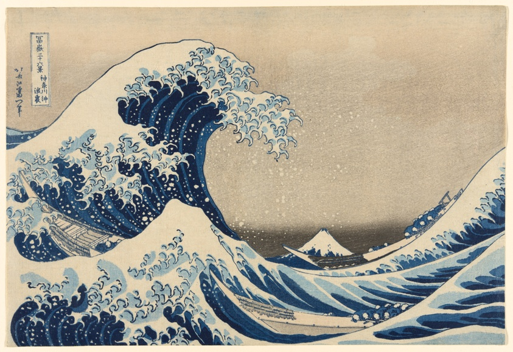
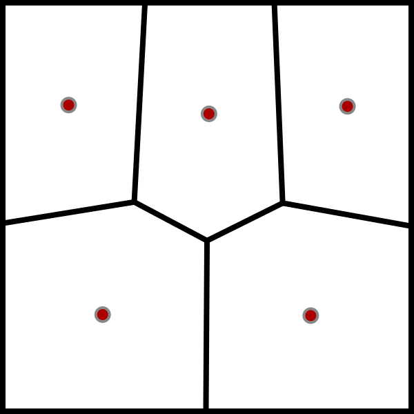
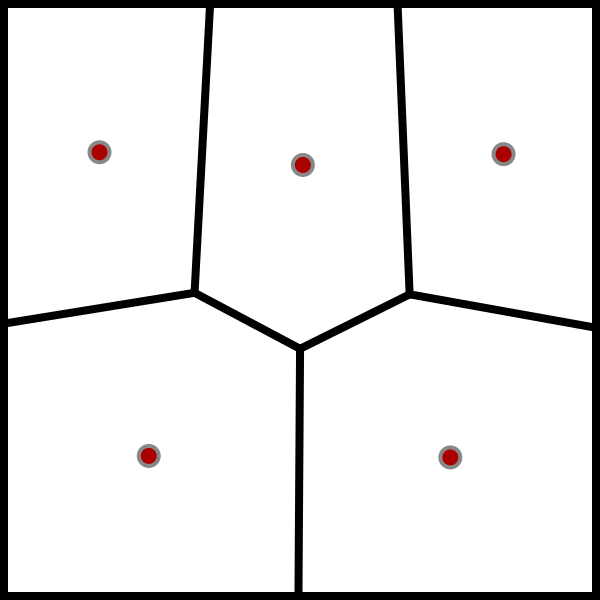
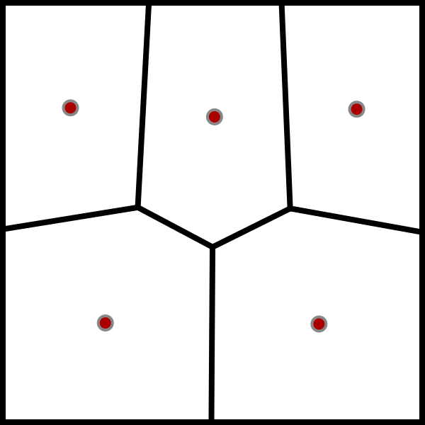

Geometric Art App | Repo
Create desktop backgrounds, favicons, profile pictures, etc, using this simple web app. This project turns algorithms into art.

 


Some features
- Sample "distinct colors" from an image using K-Means Clustring
- Fit tiling to screen dimensions using Euclid's Algorith